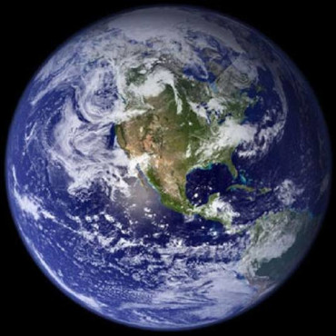

|
"Când ultimul copac va muri, când ultimul râu va fi otrăvit și ultimul pește va fi prins, vom înțelege că nu putem mânca bani."
--proverb Cree--
Planeta Albastră
|
| Home | Introducere | Poluarea aerului | Poluarea apelor | Poluarea solului | Combaterea poluării |
|

Acest site a fost creat fiindcă planeta noastră este pe
moarte şi noi avem puterea de a o salva; este un strigăt
de revoltă împotriva nepăsării şi
ignoranţei oamenilor. Planeta noastră are 4,6 miliarde
de ani, cu 3,8 miliarde de ani în urmă a apărut
ADN-ul, acesta a fost începutul vieţii pe Terra;
dinozaurii au stăpânit planeta timp de 160 milioane de
ani şi au dispărut în urma unui cataclism natural
acum 65 milioane de ani. Cea mai veche fosilă a unui hominid
(Sahelanthropus
tchadensis)
are 7 milioane de ani, Homo Sapiens apărând abia acum
195 mii de ani. Noi am cauzat extincţia a mii de specii de
animale şi plante, am epuizat multe din resursele naturale
ale acestei planete în doar câteva sute de ani. Se
zice că ceea ce distruge un idiot, 100 de înţelepţi
nu pot repara. Revoluţia industrială şi tehnologia
nu au făcut decât să distrugă, nu putem
decât să sperăm că tehnologia din ce în
ce mai avansată va reuşi să salveze ce a mai rămas
şi chiar să repare stricăciunile provocate până
acum de noi. site creat de Stefan URL: http://www.planeta.albastra.go.ro/index.html |